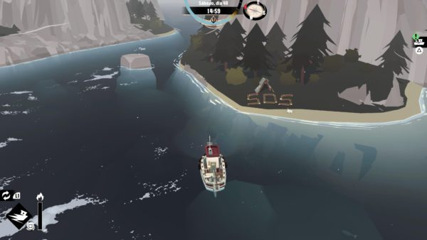

Dreadge e suas curiosidades!
Sobre!
Dredge possui diversos mistérios, como o que aconteceu com o antigo pescador, com o antigo prefeito e até mesmo sobre o surgimento da névoa que aparece ao anoitecer e enlouquece os pescadores. Todos os personagens esquivam das perguntas e a história do que aconteceu acaba sendo contada por mensagens dentro de garrafas que encontramos pelo mar. O que sabemos é que tem um grande tesouro perdido por ai, e antigos navegadores que tentaram abri-lo sumiram.
O principal objetivo de Dredge é coletar relíquias para o Colecionador. Essas relíquias estão espalhadas pelo mapa e isso vai ditando pra onde você tem que ir. Em cada ilha, você vai encontrar pessoas e peixes diferentes e missões que precisam ser concluídas. Cada peixe é de um tipo específico que necessita de varas, redes e gaiolas própias para serem capturados que são obtidos através de pesquisas feitas pelo pescador.
A tarefa que mais realizamos é, obviamente, pescar. É bem fácil conseguir ver onde tem peixe, porque eles formam uma espuminha na água e para pescar temos que completar um tipo de mini jogo que consiste apenas em apertar o botão na hora certa para puxar a vara de pesca. Assim como dizem que na vida real é super relaxante pescar, aqui em Dredge isso segue verdade porque nossas únicas preocupações são apertar o botão na hora certa e não esgotar o grupo de peixes.
